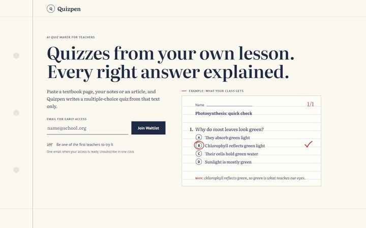
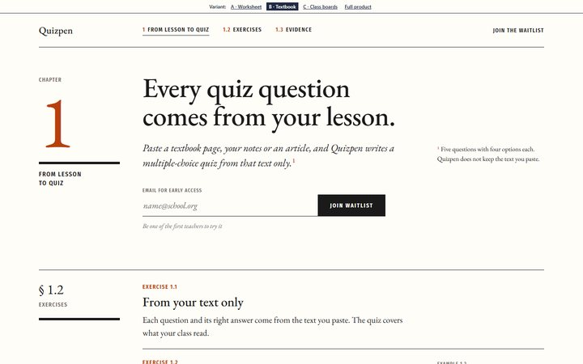
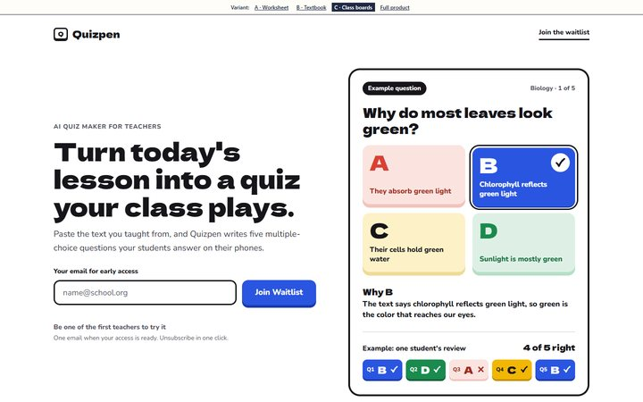

Three landing variants, one brief
Each page has exactly what the brief asks for: a headline with one sentence, three features, an email form with «Join Waitlist», a thank-you on the same page, a counter and social proof. They differ in design and in the argument they lead with.

Teacher's worksheet
Leads with the result: a quiz from your own lesson with every right answer explained, shown as a graded sheet.

Textbook
Leads with trust: every question comes from your text, and the evidence sits in footnotes like a textbook chapter.

Class boards
Leads with the classroom: today's lesson becomes a quiz students play on their phones, with answer cards.
How to choose: every signup is tagged with its variant (utm_campaign spec-a, spec-b or spec-c in the Google Sheet), and every analytics event carries the same variant. Send equal traffic to the three pages and keep the one with the best visit-to-signup rate.